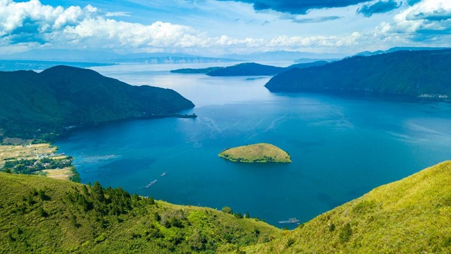

Danau Toba: Pesona Danau Vulkanik Terbesar di Dunia
Diposting oleh Ivana Pasaribu pada 15 September 2025
Danau Toba, yang terletak di Sumatera Utara, adalah danau vulkanik terbesar di dunia dan salah satu keajaiban alam paling spektakuler di Indonesia. Terbentuk dari letusan supervulkan ribuan tahun yang lalu, danau ini memiliki kedalaman hingga 500 meter.
Di tengah danau, terdapat Pulau Samosir, sebuah pulau yang luasnya hampir setara dengan Singapura. Pulau ini adalah rumah bagi masyarakat Batak Toba yang memiliki budaya dan tradisi yang kaya.
Pengunjung dapat menikmati berbagai aktivitas di Danau Toba, mulai dari berenang di airnya yang jernih, berkeliling Pulau Samosir dengan sepeda motor, hingga mengunjungi desa-desa adat seperti Tomok dan Ambarita untuk melihat rumah Bolon dan pertunjukan tari Sigale-gale.
Pemandangan dari puncak-puncak bukit di sekitar danau sungguh menakjubkan. Udara yang sejuk dan suasana yang tenang menjadikan Danau Toba sebagai tempat yang ideal untuk melepaskan penat dari hiruk pikuk kota.
Kuliner khas Batak juga menjadi daya tarik tersendiri. Jangan lewatkan kesempatan untuk mencicipi hidangan seperti ikan mas arsik atau saksang sambil menikmati pemandangan danau yang indah.
Kembali ke Daftar Blog